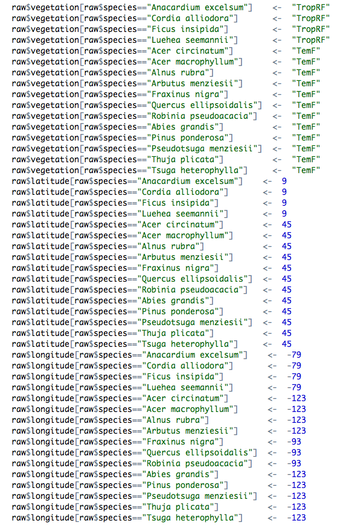

In many analyses, data is read from a file, but must be modified before it can be used. For example you may want to add a new column of data, or do a “find” and “replace” on a site, treatment or species name. There are 3 ways one might add such information. The first involves editing the original data frame – although you should never do this, I suspect this method is quite common. A second – and widely used – approach for adding information is to modify the values using code in your script. The third – and nicest – way of adding information is to use a lookup table.
One of the most common things we see in the code of researchers working with data are long slabs of code modifying a data frame based on some logical tests.Such code might correct, for example, a species name:
1 2 | |
or add some details to the data set, such as location, latitude, longitude and mean annual precipitation:
1 2 3 4 5 | |
In large analyses, this type of code may go for hundreds of lines.

Now before we go on, let me say that this approach to adding data is much better than editing your datafile directly, for the following two reasons:
- It maintains the integrity of your raw data file
- You can see where the new value came from (it was added in a script), and modify it later if needed.
There is also nothing wrong with adding data this way. However, it is what we would consider messy code, for these reasons:
- Long chunks of code modifying data is inherently difficult to read.
- There’s a lot of typing involved, so lot’s of work, and thus opportunities for error.
- It’s harder to change variable names when they are embedded in code all over the place.
A far nicer way to add data to an existing data frame is to use a lookup table. Here is an example of such a table, achieving similar (but not identical) modifications to the code above:
1
| |
## lookupVariable lookupValue newVariable newValue
## 1 id 1 species Banksia oblongifolia
## 2 id 2 species Banksia ericifolia
## 3 id 3 species Banksia serrata
## 4 id 4 species Banksia grandis
## 5 NA family Proteaceae
## 6 NA location NSW
## 7 id 4 location WA
## source
## 1 Daniel Falster
## 2 Daniel Falster
## 3 Daniel Falster
## 4 Daniel Falster
## 5 Daniel Falster
## 6 Daniel Falster
## 7 Daniel FalsterThe columns of this table are
- lookupVariable is the name of the variable in the parent data we want to match against. If left blank, change all rows.
- lookupValue is the value of lookupVariable to match against
- newVariable is the variable to be changed
- newValue is the value of
newVariablefor matched rows - source includes any notes about where the data came from (e.g., who made the change)
So the table documents the changes we want to make to our dataframe. The function addNewData.R takes the file name for this table as an argument and applies it to the data frame. For example let’s assume we have a data frame called data
myData## x y id
## 1 0.93160 5.433 1
## 2 0.24875 3.868 2
## 3 0.92273 5.944 2
## 4 0.85384 5.541 2
## 5 0.30378 3.985 2
## 6 0.41205 4.415 2
## 7 0.35158 4.440 2
## 8 0.13920 3.007 2
## 9 0.16579 2.976 2
## 10 0.66290 5.315 3
## 11 0.25720 3.755 3
## 12 0.88086 5.345 3
## 13 0.11784 3.183 3
## 14 0.01423 3.749 4
## 15 0.23359 4.264 4
## 16 0.33614 4.433 4
## 17 0.52122 4.393 4
## 18 0.11616 3.603 4
## 19 0.90871 6.379 4
## 20 0.75664 5.838 4and want to apply the table given above, we simply write
1 2 3 | |
## x y id species family location
## 1 0.93160 5.433 1 Banksia oblongifolia Proteaceae NSW
## 2 0.24875 3.868 2 Banksia ericifolia Proteaceae NSW
## 3 0.92273 5.944 2 Banksia ericifolia Proteaceae NSW
## 4 0.85384 5.541 2 Banksia ericifolia Proteaceae NSW
## 5 0.30378 3.985 2 Banksia ericifolia Proteaceae NSW
## 6 0.41205 4.415 2 Banksia ericifolia Proteaceae NSW
## 7 0.35158 4.440 2 Banksia ericifolia Proteaceae NSW
## 8 0.13920 3.007 2 Banksia ericifolia Proteaceae NSW
## 9 0.16579 2.976 2 Banksia ericifolia Proteaceae NSW
## 10 0.66290 5.315 3 Banksia serrata Proteaceae NSW
## 11 0.25720 3.755 3 Banksia serrata Proteaceae NSW
## 12 0.88086 5.345 3 Banksia serrata Proteaceae NSW
## 13 0.11784 3.183 3 Banksia serrata Proteaceae NSW
## 14 0.01423 3.749 4 Banksia grandis Proteaceae WA
## 15 0.23359 4.264 4 Banksia grandis Proteaceae WA
## 16 0.33614 4.433 4 Banksia grandis Proteaceae WA
## 17 0.52122 4.393 4 Banksia grandis Proteaceae WA
## 18 0.11616 3.603 4 Banksia grandis Proteaceae WA
## 19 0.90871 6.379 4 Banksia grandis Proteaceae WA
## 20 0.75664 5.838 4 Banksia grandis Proteaceae WAThe large block of code is now reduced to a single line that clearly expresses what we want to achieve. Moreover, the new values (data) are stored as a table of data in a file, which is preferable to having data mixed in with our code.
You can use this approach You can find the example files used here, as a github gist.
Acknowledgements: Many thanks to Rich FitzJohn and Diego Barneche for valuable discussions.